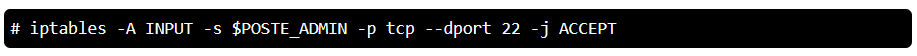
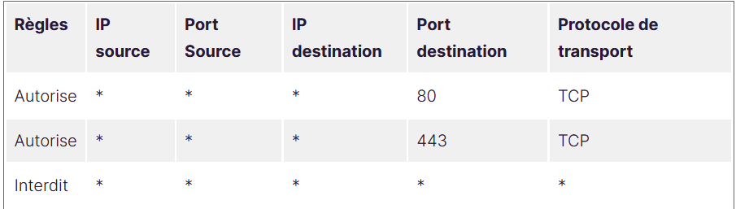
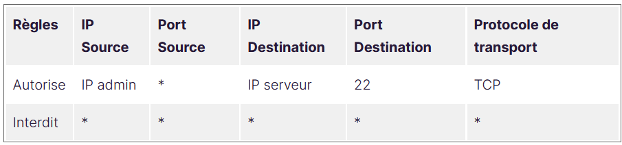

Firewall
Qu'est ce que le firewall ?
Distributeurs principaux
Qu'est-ce qu'une règle ?
Dans de nombreux cas, une des premières étapes pour un administrateur consiste à personnaliser les profils du firewall en établissant des règles, afin qu'il puisse fonctionner avec des applications ou d'autres types de logiciels. Une règle peut être ajoutée pour autoriser un logiciel, ouvrir un port ou un protocole, ou autoriser un type de trafic prédéfini.
Règles de trafic entrant
Dans beaucoup de cas, pour que des applications fonctionnent dans le réseau, il est nécessaire d'autoriser des types spécifiques de trafic entrant.
- Les règles d'autorisation définies explicitement sont prioritaires sur le paramètre par défaut
- Elles sont prioritaires sur les règles d'autorisation en conflit
- Plus une règle est spécifique, précise, plus elle est prioritaire
Règles d'application
Une fois installés, les applications et services réseau émettent un appel d'écoute, spécifiant les ports et protocoles nécessaires pour son fonctionnement. Etant donné qu'il existe une action de blocage par défaut, il faut créer une règle d'exception de trafic entrant, pour autoriser le trafic. L'application peut parfois ajouter cette règle de par elle-même, sinon, l'administrateur doit lui-même créer cette règle.
Si aucune règle d'autorisation définie par l'administrateur, ou d'application active, n'existe, une boîte de dialogue invitera l'utilisateur à accepter ou bloquer les paquets d'une application.
Règles d'application et de fusion des stratégies locales
Elles contrôlent la façon dont les différentes sources de stratégie peuvent être combinées. Les administrateurs peuvent configurer différents comportements de fusion pour les profils Domaine, Privé et Public.
Les paramètres de stratégie de fusion de règles autorisent ou empêchent les administrateurs locaux de créer leurs propres règles en plus de celles obtenues à partir du fournisseur de solutions Cloud, ou de l'objet de stratégie de groupe.
Recommandations relatives aux règles de pare-feu
- Conserver le plus possible les paramètres par défaut. Ces paramètres sont conçus pour sécuriser les appareils pour une utilisation dans la plupart des scénarios réseau. Par exemple, le comportement de blocage par défaut des connexions entrantes.
- Créer les règles dans les trois scénarios, mais utiliser uniquement celui qui convient aux scénarios. Par exemple, pour une application de partage utilisée uniquement sur le réseau privé, on crée une règle pour les trois profils, mais on active que celle sur le profil privé.
- Etre le plus spécifique possible lors de la création de règles. Cependant, lorsque de nouvelle règles sont établies et utilisent des adresses IP ou des ports, utiliser des plages d'adresses ou des sous-réseaux consécutifs le plus possible. Cela évite la création de plusieurs filtres et réduit la complexité et donc évite la dégradation des performances.
- Déployer des exceptions uniquement pour les applications et services déterminés à des fins légitimes.
Considérations relatives aux règles de trafic sortant
- La modification des règles de trafic sortant en bloqué peut être envisagée pour certains environnements hautement sécurisés, toutefois la configuration de règles de trafic entrant ne doit jamais être modifiée de façon à autoriser tout le trafic.
- Il est recommandé d'autoriser le trafic sortant par défaut pour la plupart des déploiements afin de simplifier les déploiements d'applications, sauf si l'organisation préfère un contrôle plus strict.
- Dans les environnements très sécurisées, il y a un inventaire de toutes les applications. Ils indiquent si une application utilisée nécessite une connexion réseau.
Comment la créer ?
Bien qu'il existe des logiciels variés, les règles ont sensiblement la même sémantique. Ceci vient du fait qu'elles prennent comme arguments les différentes parties des en-têtes IP et UDP ou TCP. Voici les trois étapes à suivre :
- Autoriser ou interdire le trafic
- Définir les adresses source et destination
- Définir les ports source et destination
Ce sont les trois éléments minimums qu'il faut pour créer une règle.
Création sur linux avec iptables :

Création sur le pare-feu de windows :
New-NetFirewallRule -DisplayName "Allow Inbound Telnet" -Direction Inbound -Program %SystemRoot%\System32\tlntsvr.exe -RemoteAddress LocalSubnet -Action AllowComment la lire ?
Dans le cas de l'ouverture des ports HTTP et HTTPS :
Voici une règle qui autoriserait le trafic HTTP et HTTPS :

Les deux premières règles autorisent tout le monde à se diriger vers une autre adresse, vers le port 80 ou 443.
La dernière règle interdit tout autre type de trafic.
Si maintenant, on veut autoriser la connexion au serveur en utilisant le protocole SSH :

On autorise donc ici le trafic depuis la machine de l'administrateur vers le serveur sur le port 22.
Tout le reste du trafic est interdit.